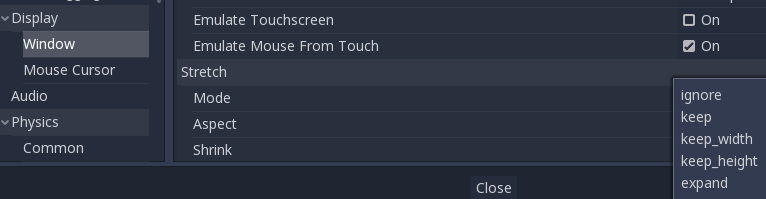
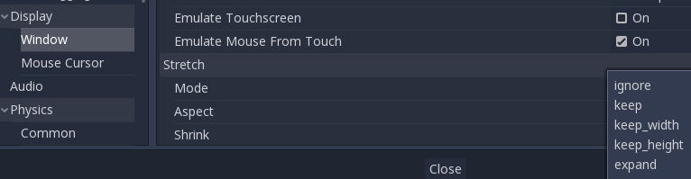

CaptainCN

image from godot engine.


image from godot engine.

Could you explain what the displayed option does?

It’s for automatic UI adaptation?
Sorry. I can’t explain this in English. My English too bad.
just read this doc.

As maybe a starting point, Urho offers x y render target size multiplier.
https://urho3d.github.io/documentation/HEAD/_render_paths.html
<renderpath>
<rendertarget name="RTName" tag="TagName" enabled="true|false" cubemap="true|false" size="x y"|sizedivisor="x y"|sizemultiplier="x y"
demonstrated by the AutoExposure shader (active in 42_PBRMaterials sample):
https://github.com/urho3d/Urho3D/blob/master/bin/Data/PostProcess/AutoExposure.xml